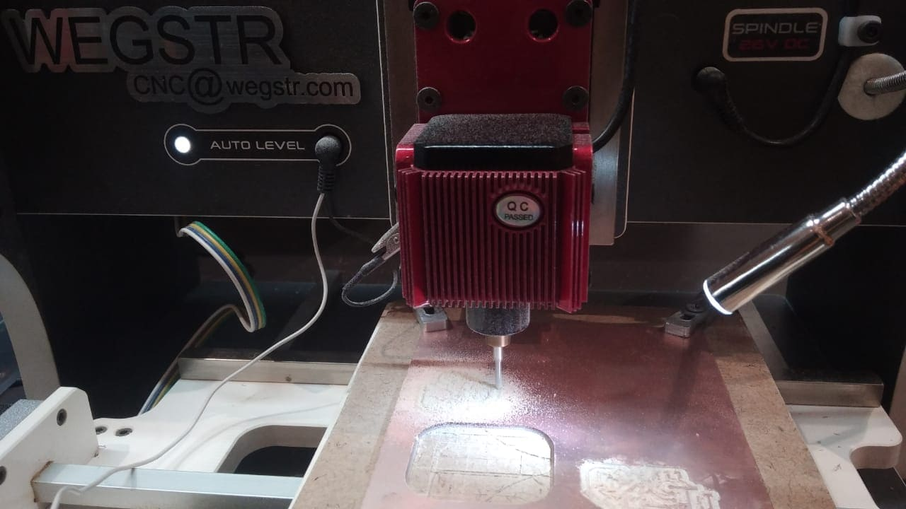

PCB Design and Fabrication Assignment
Introduction
In this assignment, we explored how to design and fabricate a custom PCB using KiCad for schematic capture and PCB layout, and the Wegstr CNC milling machine for fabrication. The process covered schematic creation, footprint assignment, board layout, generation of Gerber and SVG files, and real-time PCB milling.
1. Schematic Design in KiCad
The process begins with designing the circuit in KiCad's Eschema environment. We placed electronic components like resistors, capacitors, microcontrollers, and connectors, and connected them logically using wires. Key steps included:
- Creating a new project in KiCad
- Placing symbols from standard libraries
- Using labels and power ports
- Annotating the schematic
- Running ERC (Electrical Rules Check)

2. Footprint Assignment and PCB Layout
After completing the schematic, we assigned footprints to each component, choosing suitable SMD or through-hole packages. Then, we switched to the PCB Editor to:
- Import netlist connections
- Define board outline
- Arrange components optimally
- Route tracks for each connection
- Apply design rules for clearances and track widths


3. Generating Gerber and SVG Files
Once the layout was complete, we generated Gerber files using KiCad’s Plot tool. We also exported SVG files for use with the Wegstr machine. Important steps:
- Set output layers: F.Cu, B.Cu, Edge.Cuts, Drill Files
- Export SVG with only required layers enabled (like copper and cutout)
- Ensure correct DPI and layer scaling
4. PCB Milling Using Wegstr CNC Machine
We used the Wegstr machine to mill our PCB by importing the SVG files into its software. Key procedures involved:
- Mounting copper-clad board securely on the bed
- Importing SVG and aligning tool paths
- Selecting the correct tool bit (typically 0.1mm to 0.2mm)
- Running the engraving and cutting processes
- Post-processing with soldering and cleaning

